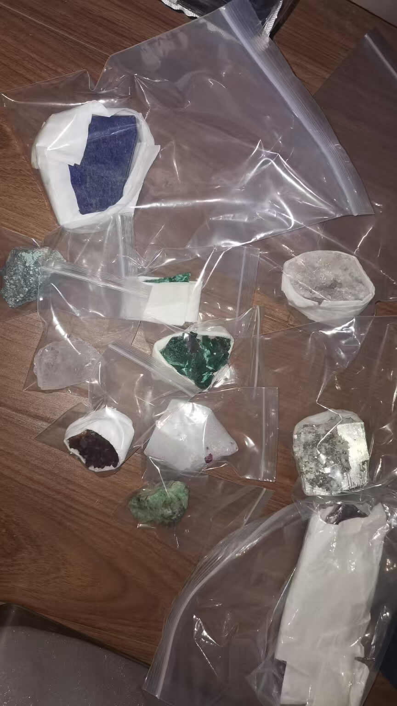
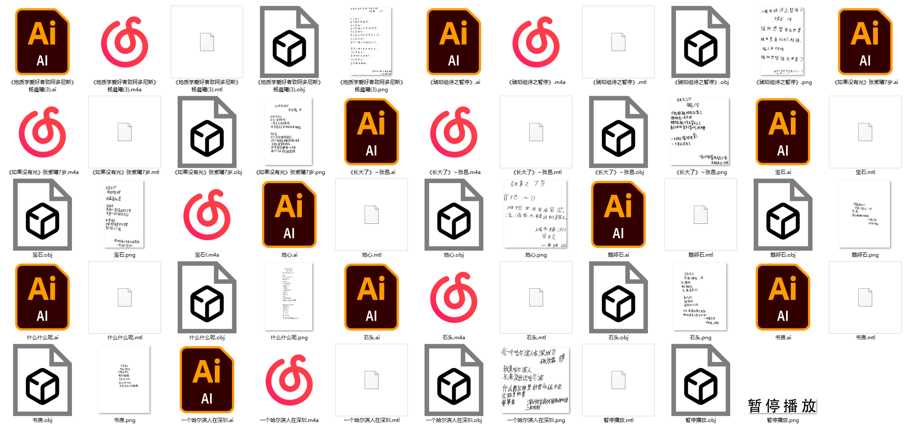
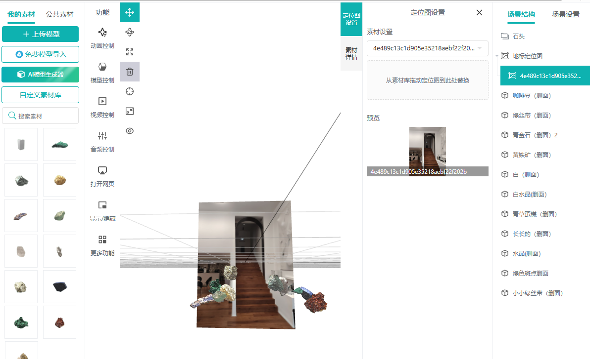
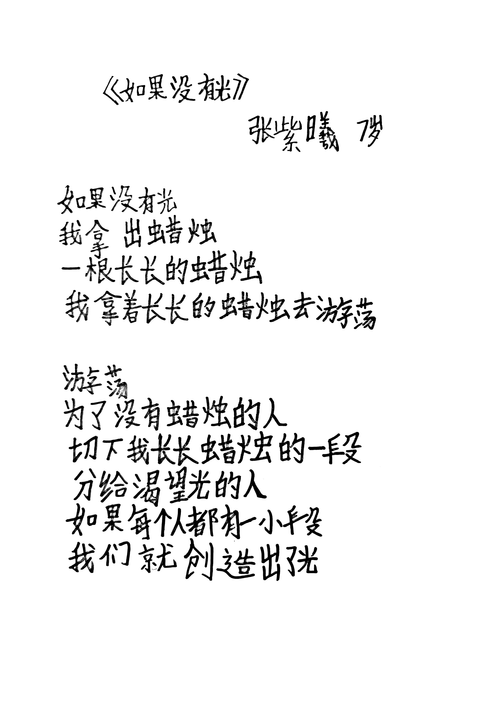
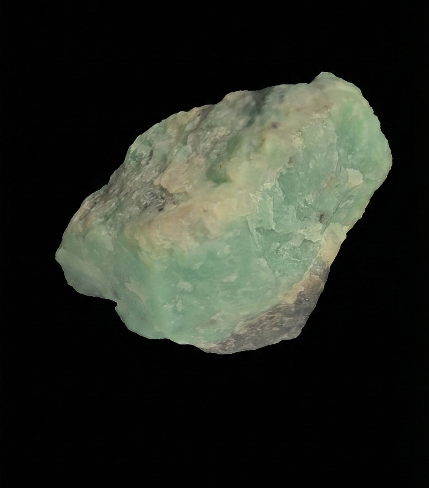
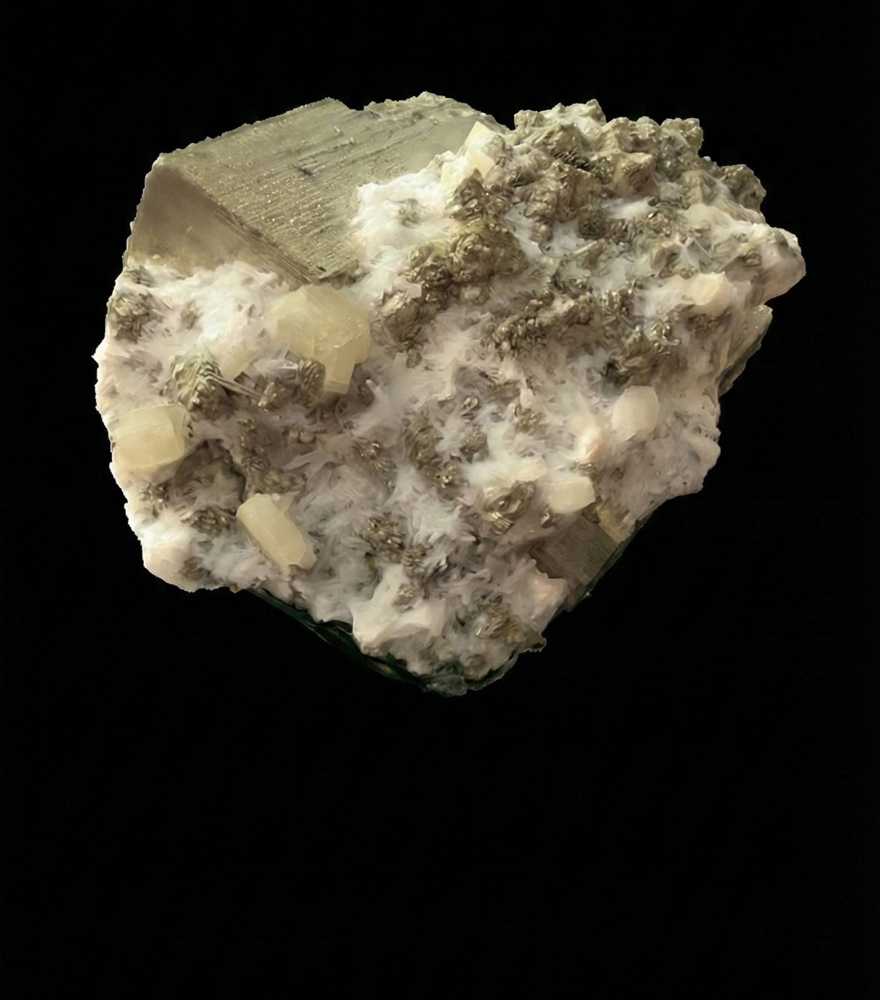
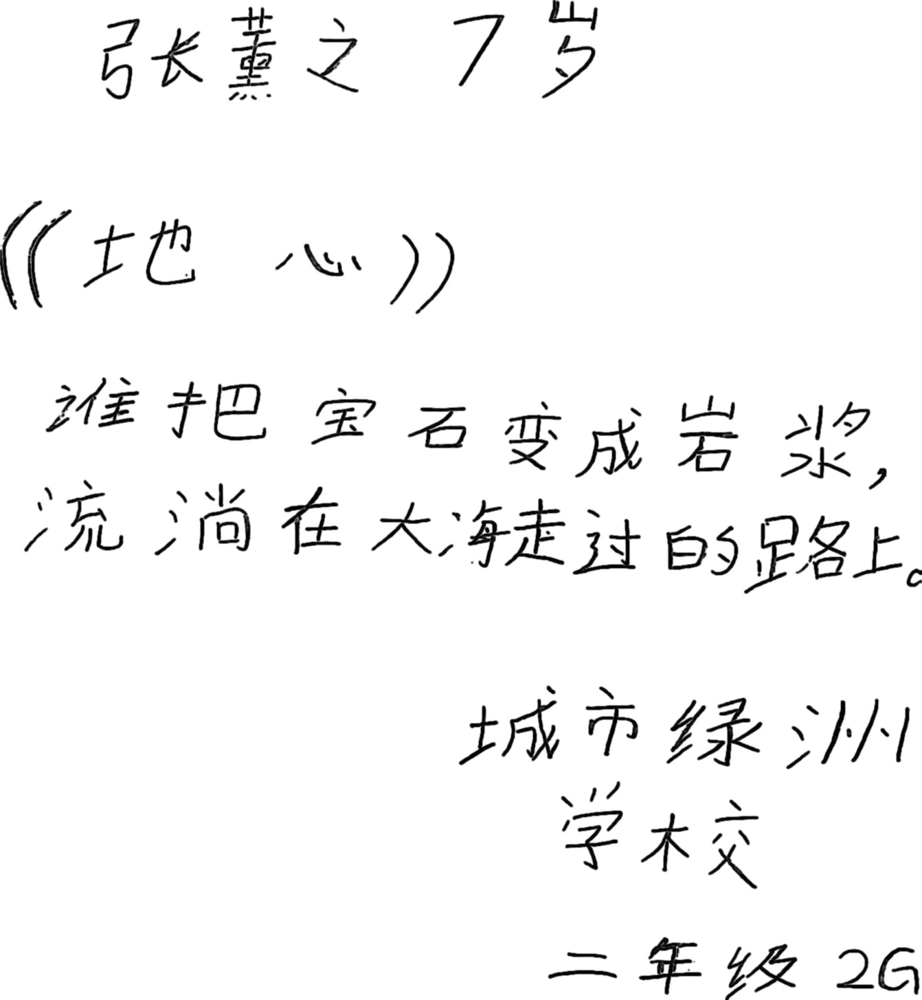
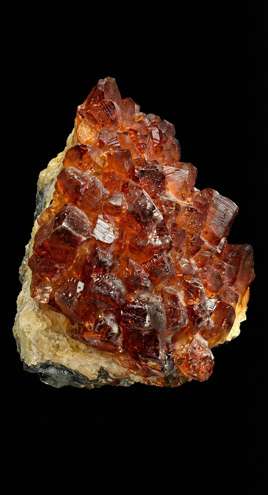
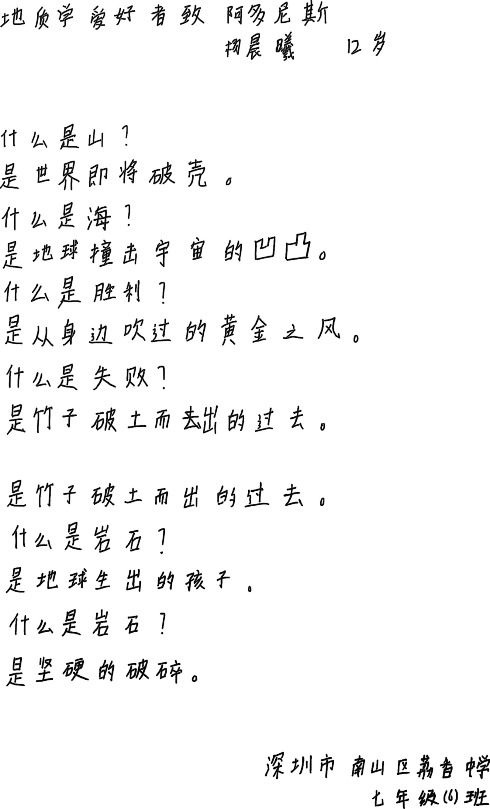
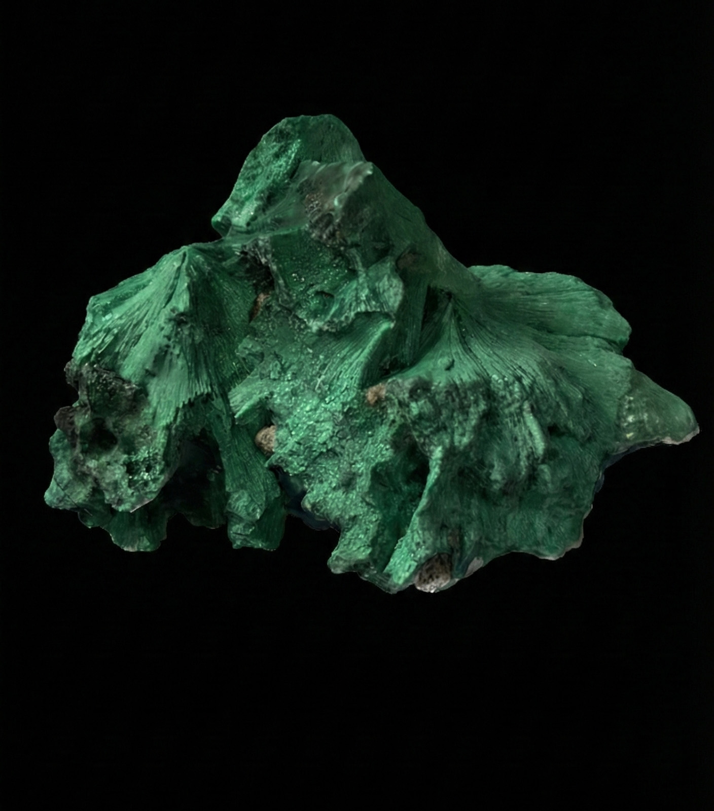

顽石与诗
Stones & Poems
项目愿景 Vision
《顽石与诗》是一个关于“看见”与“重构”的增强现实（AR）实验项目。
在成年人的世界里，石头往往是沉默、冰冷且无生命的物体。但在儿童的眼中，每一块石头都有它的性格。我们试图通过技术手段，将这种肉眼不可见的“想象力”可视化，建立自然物质与人类情感的数字化连接。
从物理到数字 Workflow

01. 样本采集

02. 数字资产构建

03. AR 编译
档案：想象力数据库
我们扫描了7组矿石标本，并记录了孩子们对应的手写诗稿。 这是“瞬时的灵感”与“永恒的物质”的直接对话。


NO.01 如果也没有光
“如果没有光，我们是不是就消失了？” —— 对应黑色矿石


NO.02 长大了
“石头也像我一样，一层一层地长高。” —— 对应层叠晶体


NO.03 地心
“谁把宝石变成了岩浆，流淌在火建造的路上。” —— 对应红色矿石


NO.04 书签
“夹在大地这本书里的记号。” —— 对应片状岩石
最终呈现 Presentation
现场观众手持石头，通过手机扫描即可触发体验。 不仅能看到漂浮的文字与动态插画，还能听到孩子们稚嫩的朗读声，从视觉与听觉双重维度“解构”这块顽石。